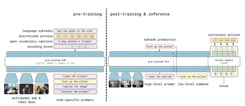

π0 — система, которая помогает делать large-scale pre-training для робототехники, где нет web-scale-датасетов. Как она устроена, рассказывали в одном из предыдущих постов. А сегодня разберём статью о новой версии системы — π0.5.
В статье речь идёт о роботах-манипуляторах, но сама идея
общая задача → semantic subtask → low-level actions выглядит применимой и к другим embodied-системам — например, автономному транспорту.Чтобы превратить π0 в π0.5, авторы придумали несколько важных вещей. Во-первых, токенайзер FAST:
На этапе претрейна next-token-prediction с CE учится гораздо быстрее диффузии и легко смешивается с другими задачами для претрейна VLM (ещё вернёмся к этому). На post-train добавляется диффузионный action-эксперт, с помощью которого итоговая модель предсказывает непрерывные траектории.
Во-вторых, модель учат предсказывать не только действия, но и подзадачи. Например, «взять подушку» для задачи «убраться в спальне». Для этого используют как размеченные траектории роботов, так и обычные vision-language-данные из интернета — картинки с текстовой разметкой (их на порядки больше, чем траекторий).
Таким образом, в претрейне используют очень разнородные материалы: траектории разных роботов, задачи на предсказание высокоуровневых действий и VLM-данные из интернета. Авторы называют этот подход heterogeneous co-training и связывают с ним способность модели обобщаться на новые окружения и задачи.
Этап 1. Тело VLM претрейнят на смеси данных. Для размеченных траекторий модель сначала предсказывает текстовые токены подзадачи, а на их основе — FAST-токены траектории.
Этап 2. На пост-трейне добавляется action-эксперт. Вся модель файнтьюнится под мобильных роботов-манипуляторов с помощью CE для FAST-токенов и flow-matching loss для непрерывной траектории. При этом эксперт видит весь префикс, включая подзадачу, но не FAST-токены.
Для быстрого инференса FAST-токены уже не генерируются. Модель сначала определяет высокоуровневую подзадачу, затем эксперт предсказывает непрерывную траекторию на её основе.
Эксперименты показали, что такой подход к обучению помогает улучшить генерализацию: робосистема начинает лучше справляться с долгосрочными многошаговыми задачами. Для автономных роботов это, например, самостоятельная уборка целой комнаты в незнакомом доме.
Разбор подготовил
404 driver not found
